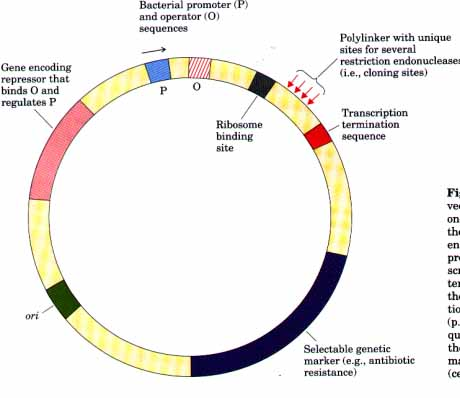
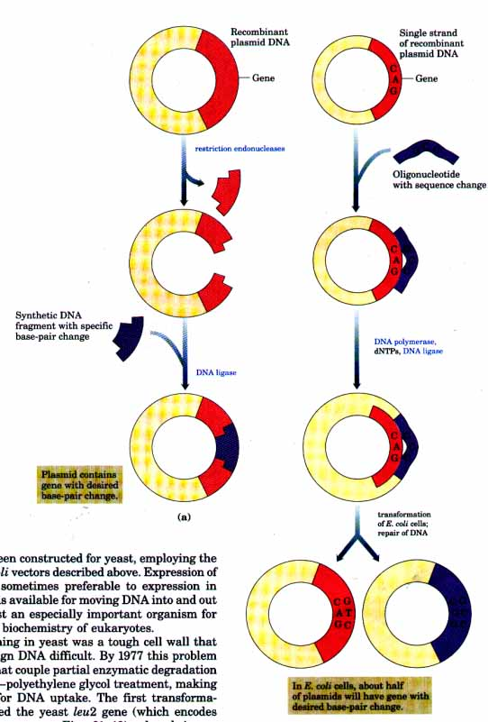
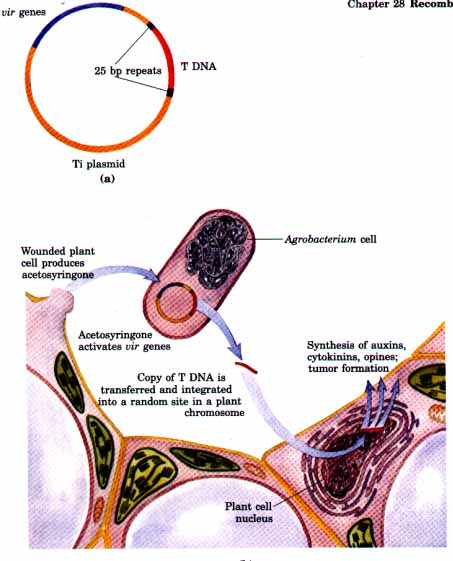
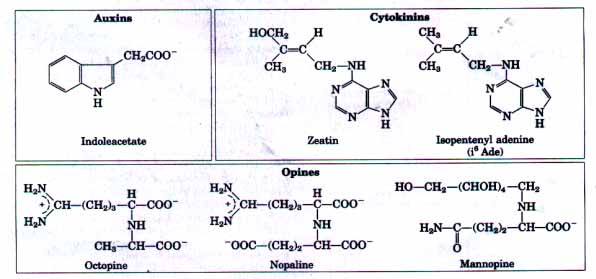
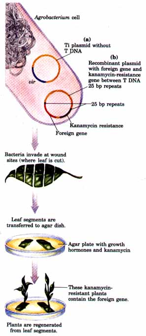

Normally, cloning a gene is only the first step in a much grander design. A cloned gene can be used to generate large amounts of its protein product. The amino acid sequence of the protein can be altered by introducing base-pair changes in the gene, a strategy that can be very powerful in addressing questions concerning protein folding, structure, and function. Increasingly sophisticated methods for moving DNA into and out of cells of all types are providing another avenue for studying gene function and regulation, and are allowing the introduction of new traits into plants and animals.
Our focus now turns to applications of DNA cloning, beginning with the proteins produced by cloned genes. We then describe cloning procedures used for a variety of eukaryotic cells, before finishing with an overview of the potential and implications of this technology.
Frequently it is the product of the cloned gene rather than the gene itself that is of primary interest. For example, certain proteins are immensely important for a variety of commercial, therapeutic, or research purposes. Understanding the fundamentals of DNA, RNA, and protein metabolism and their regulation in E. coli has made it possible to express cloned genes in order to study their protein products. Because most eukaryotic genes do not have the DNA sequence elements (promoters, etc.) required for their expression in E. coli cells, bacterial regulatory sequences for transcription and translation must be inserted at appropriate positions in the vector DNA relative to the eukaryotic gene itsel?In some cases cloned genes are expressed so well that the protein product is overproduced, sometimes representing 10% or more of the cellular protein. Such a high concentration of a foreign protein can kill an E. coli cell; in these cases gene expression must be limited until a few hours before the planned harvest of the cells. Cloning vectors that have the transcription and translation signals necessary for the regulated expression of a cloned gene are often called expression vectors.
| A variety of expression vectors have been constructed with unique restriction sites for cloning placed near a well-characterized promoter (such as the lac promoter from E. coli) and its regulatory elements (Fig. 28-13). Some of these vectors incorporate other features such as bacterial ribosome binding sites and transcription termination signals. Expression of cloned genes in bacteria and other cells has provided large quantities of many proteins important for industry and research. Some of the proteins now available for medicine and agriculture as a result of this technology are described later in this chapter. |  Figure 28-13 An example of an E. coli expression vector. The gene to be expressed is inserted into one of the restriction sites in the polylinker, near the promoter. The gene must be inserted with the end encoding the amino terminus proximal to the promoter. The promoter provides for efficient transcription of the inserted gene, and the transcription terminator can improve the amount and stability of the mRNA produced. The operator permits regulation by means of a repressor that binds to it(p. 944). The ribosome binding site provides sequence signals needed for efficient translation of the mRNA derived from the gene. The selectable marker allows the selection of transformed cells (cells containing the recombinant DNA). |
The structure of a protein can be changed by altering the DNA sequence of the cloned gene for that protein. One or a few specific amino acids may be replaced by means of site-directed mutagenesis (also referred to as "protein engineering"), one of the most powerful methods for studying protein structure and function. Two of the common methods for achieving this are illustrated in Figure 28-14.

Figure 28-14 Two approaches to site-directed mutagenesis. (a) A DNA segment is synthesized and is used to replace a DNA fragment that has been removed by cleavage with a restriction endonuclease. (b) An oligonucleotide is synthesized with a desired sequence change at one position. This is hybridized to a single-stranded copy of the gene to be altered, and acts as primer for synthesis of a duplex DNA (with one mismatch). This DNA is then used to transform cells. Cellular mismatch repair will produce some clones with the desired sequence change.
Sometimes, if appropriate restriction sites closely flank the sequence to be altered, a change can be made by simply removing a DNA segment and replacing it with a synthetic one that is identical to the original except for the desired change (Fig. 28-14a). If suitably located restriction sites are not present, an approach called oligonucleotidedirected mutagenesis can be used to create a specific DNA sequence change (Fig. 28-14b). A short synthetic DNA strand with a specific base change is annealed to a single-stranded cloned copy of the gene. The mismatch of one base pair out of 15 to 20 does not adversely affect annealing if it is done at an appropriate temperature. This annealed strand is then used as a primer for synthesis of a complete duplex plasmid containing the mismatch. The duplex recombinant plasmid is introduced into bacteria, where the mismatch is repaired by cellular DNA repair enzymes. About half of the repair events will remove and replace the altered base, but the other half will remove and replace the normal base, retaining the desired mutation. Transformants are screened (often simply by sequencing their plasmid DNA) until a bacterial colony with the altered sequence is found. Changes can also be introduced that involve more than one base pair. Large parts of a gene can be deleted by cutting out a segment with restriction endonucleases and ligating the remaining portions to form a smaller gene. Parts of two different genes can be ligated to create new combinations. The product of such a fused gene is called a fusion protein. (Note that these "fusion proteins" are unrelated to the fusion proteins that participate in the process of membrane fusion, discussed in Chapter 10.) In fact, ingenious methods exist to bring about virtually any gene alteration.
Site-directed mutagenesis has greatly facilitated research on proteins by allowing investigators to make specific changes in the primary structure of a protein and to examine the effects of these changes on the folding, three-dimensional structure, and catalytic activity of the protein. Site-directed mutagenesis is also being used commercially to create proteins with enhanced activity or with the ability to function in harsh environments such as high temperatures, organic solvents, and extremes of pH.
Genetic engineering is by no means restricted to E. coli as the host cell. Among eukaryotes, yeasts are particularly convenient organisms for this work. The reasons echo those that recommend E. coli as an experimental organism: yeast genetics is a well-developed discipline; the genome of the most commonly used yeast, Saccharomyces cerevisiae, contains only 14 x 106 base pairs (a simple genome by eukaryotic standards, less than fourfold larger than the E. coli chromosome); fmally, yeast is a microorganism that is very easy to maintain and grow on a large scale in the laboratory.
Expression vectors have been constructed for yeast, employing the same principles as for the E. coli vectors described above. Expression of eukaryotic genes in yeast is sometimes preferable to expression in E. coli. The convenient methods available for moving DNA into and out of the cells help to make yeast an especially important organism for studying many aspects of the biochemistry of eukaryotes.
The major obstacle to cloning in yeast was a tough cell wall that made the introduction of foreign DNA difficult. By 1977 this problem was overcome with methods that couple partial enzymatic degradation of the cell wall with a calcium-polyethylene glycol treatment, making the cells sufficiently porous for DNA uptake. The first transformation experiments in yeast used the yeast Leu2 gene (which encodes (3-isopropylmalate dehydrogenase; see Fig. 21-12), cloned in an E. coli plasmid, to transform yeast cells that had a mutant leu2 gene (leu2~) and thus could not grow in the absence of added leucine. Some of the cells were transformed to leu+ (i.e., they could synthesize leucine) following replacement of the defective leu2~ gene with the introduced leu2 gene by homologous recombination (Chapter 24). Transformation of this type in which the introduced DNA is integrated into a cellular chromosome is called integrative transformation; it occurs at low frequency.
Transformation efficiencies can be increased by introducing cloned DNA on a self replicating plasmid. A naturally occurring yeast plasmid called the 2 micron (2μ) plasmid has been engineered to create a variety of cloning vectors that incorporate a replication origin and other sequences needed for plasmid maintenance in yeast. Another type of plasmid that provides an increase in transformation frequencies contains a yeast chromosomal origin of replication (an autonomously replicating sequence, ARS; see p. 830). Such plasmids are somewhat unstable (and are lost from the yeast population) unless they also contain a centromere that permits them to function and segregate like yeast chromosomes during cell division.
Recombinant plasmids are available that incorporate multiple genetic elements (replication origins, etc.), allowing them to be maintained in more than one species; for example, yeast or E. coli. Plasmids that can be propagated in cells of two or more different species are called shuttle vectors.
The introduction of recombinant DNA into plants has enormous potential for agriculture, producing more nutritious and higher-yielding crops that are resistant to environmental stresses such as insect pests, disease, cold, and drought. Unlike animals, fertile plants of some species may be generated from a single transformed cell. Thus, a gene introduced into a plant cell may ultimately be transmitted to progeny through seed in successive generations. As with all systems, cloning in plant cells has its own peculiar problems. No naturally occurring plasmids have been found in plants to facilitate this process, and thus the most challenging task is getting DNA into plant cells.
Fortunately, scientists have found an important and adaptable ally in the soil bacterium Agrobacterium tumefaciens. The bacterium invades plants at the site of a wound, transforming plant cells near the wound and inducing them to form a tumor called a crown gall. ~robacterium contains a large (~200,000 base pair) plasmid called the Ti plasmid (Fig. 28-15). When the bacterium contacts a plant cell, a segment of this plasmid, called the T DNA (~23,000 base pairs), is transferred from the Ti plasmid to the plant cell nucleus and is integrated at a random position in one of the plant's chromosomes during transformation.This is a rare example of DNA transfer from a prokaryote to a eukaryote; it represents a natural genetic engineering process.
The T DNA encodes enzymes that convert plant metabolites to two classes of compounds important to the bacterium (Fig. 28-16). The first class consists of the plant growth hormones, auxins and cytokinins, which stimulate growth of the transformed plant cells to form the crown gall tumor. The second is a series of unusual amino acids called opines, a food source for the bacteria. The opines are produced at high concentrations in the tumor and secreted to the surroundings. They can only be metabolized by Agrobacterium, using enzymes encoded elsewhere on the Ti plasmid. In this manner the bacteria monopolize available nutrients by converting them to a form that does not benefit any other organism.
 |
Figure 28-15 (a) The Ti (tumor-inducing) plasmid of Agrobacterium tumefaciens. (b) Acetosyringone, a phenolic compound produced by plants, increases in concentration in wounded plant cells and is released from the cells. Agrobacterium senses this compound, and the virulence (vir) genes on the Ti plasmid are expressed. The uir genes encode enzymes needed to introduce the T DNA into the genome of plant cells in the vicinity of the wound. A single-stranded copy of the T DNA is synthesized and transferred to the plant cell, where it is converted to duplex DNA and integrated into a chromosome. The T DNA encodes enzymes that synthesize growth hormones and opines (see Fig. 28-16) from common metabolites. Opines can be metabolized only by Agrobacterium, which uses them as a nutrient source. Expression of the T DNA genes by transformed plant cells thus leads to cell growth (tumor formation) and the diversion of plant cell nutrients to the invading bacteria. |

Figure 28-16 Metabolites produced in Agrobacterium-infected plant cells. Auxins and cytokinins are growth hormones. The most common auxin is indoleacetate, derived from tryptophan. Cytokinins are adenine derivatives. Opines generally are derived from amino acid precursors; at least 14 different opines have been identified in different species of Agrobacterium.
| The integration of the T DNA into a
plant chromosome provides the vehicle necessary to
introduce new genes into plants. The transfer of T DNA
from Agrobacterium to the plant cell nucleus is mediated
by two 25 base pair repeats that flank the T DNA and by
the products of several genes, called virulence (vir)
genes, located elsewhere on the Ti plasmid (Fig. 28-15). The bacterial system that transfers T DNA into the plant genome can be harnessed to transfer recombinant DNA instead. A common cloning strategy employs an Agrobacterium that contains two different recombinant plasmids (Fig. 28-17). The first is a Ti plasmid from which the T DNA segment has been removed in the laboratory. The second is an Agrobacterium-E. coli shuttle vector that contains the T-DNA 25 base pair repeats flanking the gene that a researcher wants to introduce and a selectable marker (often a gene that can render plant cells resistant to an antibiotic such as kanamycin). The engineered Agrobacterium is used to infect a leaf (Fig. 28-17). Crown galls are not formed because the genes for auxin, cytokinin, and opine biosynthetic enzymes are not present on either plasmid. Instead, the uir gene products from the altered Ti plasmid direct the transformation of the plant cells by the gene flanked by the T-DNA 25 base pair repeats in the second plasmid. The transformed cells can be selected by growth on kanamycin and induced with growth hormones to form new plants. The successful transfer of recombinant DNA into plants is vividly illustrated by an experiment in which the luciferase gene from fireflies was introduced into a tobacco plant (Fig. 28-18). Note that although tobacco is not high on the list of beneficial plants needing improvement, it is often used experimentally because it is particularly easy to transform with Agrobacterium. The potential of this technology is not limited to the production of glow-in-the-dark plants. The same approach has been used to produce plants that are resistant to herbicides, plant viruses, and insect pests (Fig. 28-19). Potential benefits include increases in yields and a reduction in the need for environmentally harmful agricultural chemicals. |
 Figure 28-17 A two-plasmid strategy to create a recombinant plant. One plasmid (a) is the Ti plasmid, modified so that it lacks T DNA. The other plasmid (b) contains the gene of interest (e.g., the gene for the insect-killing protein described in Fig. 28-19) and an antibiotic-resistance (here, kanamycin-resistance) element flanked by T-DNA 25 base pair repeats. This plasmid also contains the replication origin needed for propagation in Agrobacterium. The bacteria invade at the site of a wound (the edge of the cut leaf). The uir genes on plasmid (a) mediate transfer into the plant genome of the segment of plasmid (b) flanked by the 25 base pair repeats. New plants are generated when the leaf (with transformed cells) is placed on an agar dish with controlled levels of plant growth hormones and kanamycin. Nontransformed plant cells are killed by the kanamycin. The gene of interest and the antibiotic-resistance element are normally transferred together, and thus plants that grow in the presence of this antibiotic generally contain the gene. |